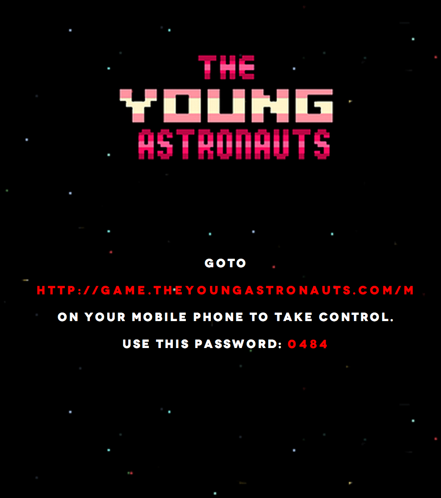

The Second Screen
Tyler Savery | jQueryTO 2014
About Me


I'm a full stack developer, running a production shop called
The Young Astronauts.
I love Javascript, PHP, Objective-C, and sometimes even CSS.
My favorite part coding is finding ways to improve my workflow.
My life would be terrible without JSON.
What is "Second Screen"
?
From Wikipedia
The second screen refers to the use of a computing device (commonly a mobile device, such as a tablet or smartphone) to provide an enhanced viewing experience for content on another device, such as a television.
Some Examples
Nitrome
Timeplay

Apple TV

YA Site
Technology
Although there are many unique ways to achieve second screen tech, we will be writing it in Javascript.
Client Side: Javascript + jQuery
Server Side: NodeJS
Framework: SocketIO
Other Technologies
- NodeJS: WebSocket-Node, WS
- Java: Jetty
- Ruby: EventMachine
- Python: Tornado
- C++: libwebsockets
- .NET: SuperWebSocket
A History of Sockets
Where did they come from? Why do we need them?
The HTTP Request Model
- Browser requests page
- Server "compiles" html output
- Server sends response
- Browser loads webpage data
Ajax
- Javascript messages server
- Server sends response
- Javascript works with response
- DOM is updated
- JS could poll server every X seconds to seem sockety
Long Polling
- For example "Comet"
- An illusion of a server initialized connection
- Client opens an HTTP connection to server
- Keeps it open until sending response
- Still used (IE: Gmail Chat)
- Performance Heavy
Web Sockets
- Browser can message Server at any point
- Server can message Browser at any point
- Persistent connection between the client and the server
Woot!
Now we can think differently as application developers.
Code:
Mobile |~~| Server |~~| Desktop
Mobile
var socket = io.connect('http://localhost:7777');
socket.on('msg', function(message){
if(message.sender != 'mobile'){
if(message.action == 'hello'){
alert(message.value);
}
}
});
$("#submit").click(function(){
var data = {
sender: 'mobile',
action: 'hello',
value: $("textarea").val()
}
socket.emit('msg', data);
});
Server
var io = require('socket.io').listen(7777);
io.sockets.on('connection', function (socket) {
var room = "jqueryto";
socket.join(room);
io.sockets.in(room).emit('newGuest', { });
socket.broadcast('newNeighbor'. { });
socket.on('msg', function (message) {
io.sockets.in(room).emit('msg', {
sender: message.sender,
action: message.action,
value: message.value
});
});
});
Desktop
var socket = io.connect('http://localhost:7777');
socket.on('msg', function(message){
if(message.sender != 'desktop'){
if(message.action == 'hello'){
alert(message.value);
}
}
});
$("#submit").click(function(){
var data = {
sender: 'desktop',
action: 'hello',
value: $("textarea").val()
}
socket.emit('msg', data);
});
First Demo
It's time for a demo. Be exicted.
A simple light switch to change our skyline from day to night.
So what's going on here?
3 Components:
- Mobile Client Application
- Server Side Application
- Desktop Client Application
1. Mobile Client
App.Run = function(){
$(".switch").on('click', function(e){
e.preventDefault();
if($(this).hasClass('checked')){
$(this).removeClass('checked');
App.Socket.emit('toggle', { state: false});
} else {
$(this).addClass('checked');
App.Socket.emit('toggle', { state: true});
}
});
};
2. Server Side
socket.on('msg', function (message) {
App.io.sockets.in(App.roomName).emit('msg', {
sender: message.sender,
action: message.action,
value: message.value
});
});
3. Desktop Client
App.Run = function(){
App.Socket.on('toggle', function(data){
if(data.state == true){
$(".day").css('opacity', 1);
$(".night").css('opacity', 0);
} else {
$(".day").css('opacity', 0);
$(".night").css('opacity', 1);
}
});
}
Is that all the code?
No. There is more. Let me walk you through all the pieces.
Note: It's time to pull up Sublime 3
app.js | simple-demo/index.php | simple-demo/mobile.js | simple-demo/desktop.js | shared/mobile.js | shared/desktop.js
What the hell? PHP?
- Wanted to show you code in a simple way
- We can be flexible
- This isn't a backend conference
- Of course, I could have built this all in Node with Express
- Easier to integrate into already existing website
- Deal with it.
Second Screen Framework
There are a whole bunch of socket frameworks. I've built a second screen framework.
It includes mostly everything you need to quickly deploy second screen apps, including:
- Passcode Authentication
- Agnostic server side component
- Capture usernames
- Handles the mobile and desktop UI in one file
- Files are included in an organized fasion. #workflow
disclaimer: this is still very much a work in progress, built mainly for this talk. Interested?
Fork it on Github
How does one run a Node App?
- NodeJS is Javascript running on the server
- What? I thought Javascript runs in the browser?
- Isomorphic Javascript (The Holy Grail)
- Thanks Google: V8 Engine
- NPM, Grunt/Gulp, Less, etc.
$ node app.js$ forever start app.js$ nodemon --debug app.jsKeyword Review
- io
- listen
- io.sockets.on()
- socket.emit
- socket.broadcast
- socket.in(room).emit
More Demos!
Tilt a' Rubiks
Draw Board
You're Invited
Closed Caption
Direction Swapp
Classic Controller
Just for fun
Trivia
Have you paid attention?
Other Clients
HTML5 Only?
There are other options!
Arduino you say?
Classic Controller+
Conclusion
The second screen is here.
What about the Third Screen?
Entertainment | Engagement | Education
Little Mermaid | ChromeCast | GetGlue Walking Dead | CoCo | Shazam